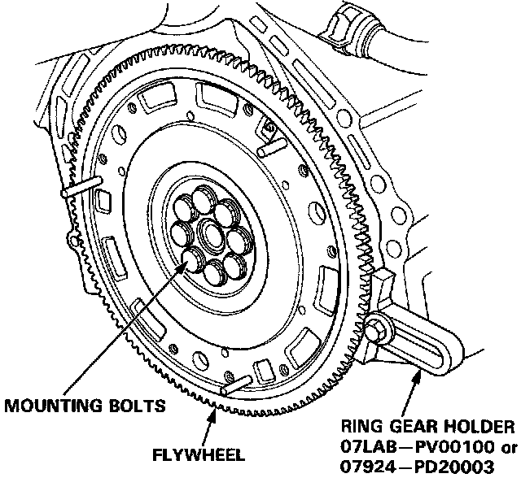
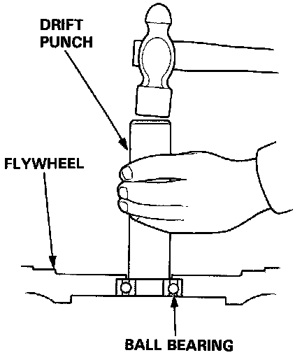
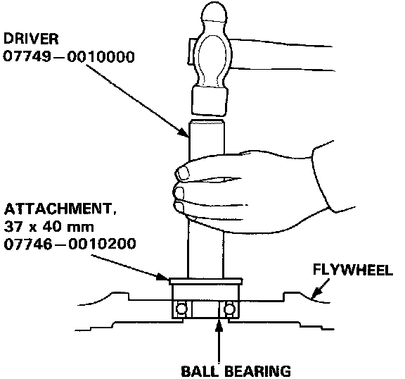
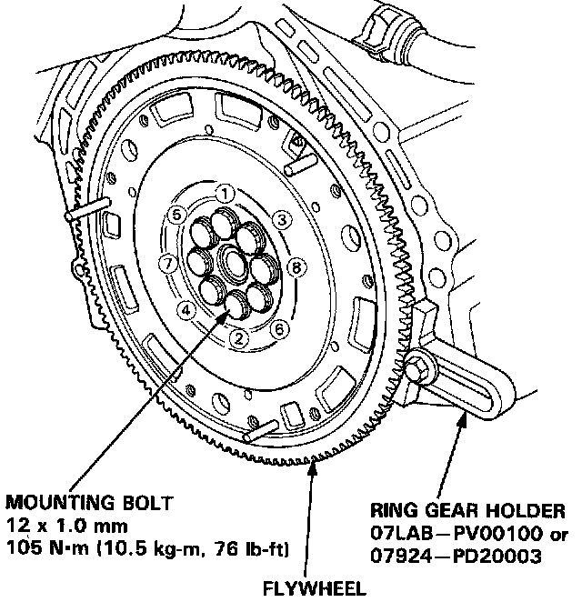

Flywheel Removal and Installation
FLYWHEEL AND FLYWHEEL BEARING REPLACEMENT
1. Remove the flywheel mounting bolts in a crisscross pattern in several steps, and remove the flywheel.

2. Remove the ball bearing from the flywheel.

3. Drive the new ball bearing into the flywheel using the special tools as shown.
4. Align the holes in the flywheel with the mounting bolt holes then install the flywheel. Install the bolts finger tight.

5. Install the special tool, then torque the flywheel mounting bolts in a crisscross pattern in several steps as shown.